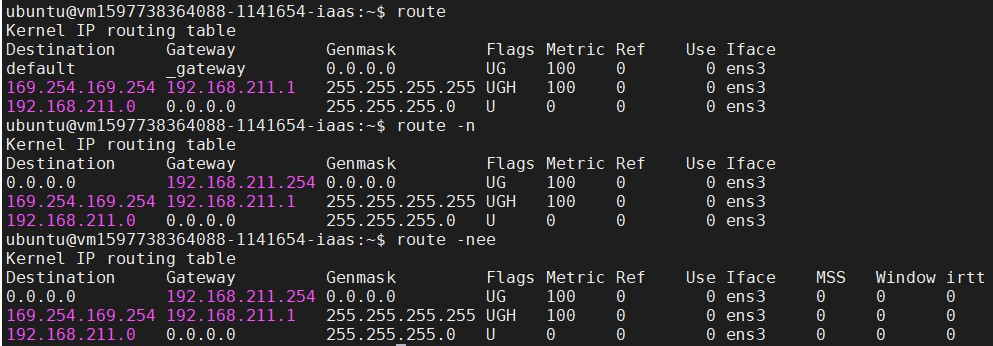

VPN
如果要使用國網內部的資源，因為有鎖網域的原因，所以要用 VPN， 本文介紹如何在 TWCC 的 VM(VCS) 安裝 VPN，以及對 NCHC-VPN 連線的相關設定。
最後 git clone 中心的 gitlab(https://gitlab.nchc.org.tw/) 專案，做為示範案例。
reference
- TWCC VM - NCHC VPN - HackMD: Thomas 提供。
- Linux 使用 openfortivpn 連線至 Fortinet VPN 伺服器建立 PPP+SSL VPN 教學與範例 - Office 指南: openfortivpn 設定。
- git错误error: server certificate verification failed. CAfile: /etc/ssl/certs/ca-certificates.crt CRLfile: none - 简书: git 設定。
- Git 透過 HTTPS 連線失敗：server certificate verification failed 解決方式 - Office 指南: git 設定。
步驟
先把所有步驟列出來，再一一介紹說明
- login to VM，查看相關設定。
安裝與設定 openfortivpn
不要用預設路由，會造成VM斷線失連。 所以要設定 set-routes = 0
啟動 openfortivpn
手動查找要連的服務主機IP並加入
- gitconfig設定
- 切斷 VPN 連線
--
step01. login to VM，查看相關設定
登入自己的 VM，這應該沒什麼問題XD~
在這個階段你可以知道幾件事情。 因為你可以登入，所以你知道自己 VM 的 IP~
有幾個指令可以順便玩玩看。(ifconfig、route、ip address)
ifconfig:
啟動、觀察與修改網路介面的相關參數。
route:
兩部主機之間一定要有路由才能夠互通 TCP/IP 的協定，否則就無法進行連線! 一般來說，只要有網路介面，該介面就會產生一個路由，所以我們的主機一定會有一個 eth0 的介面。(TWCC-VM的初始名稱叫做 ens3)
- -n ：不要使用通訊協定或主機名稱，直接使用 IP 或 port number
- -ee ：使用更詳細的資訊來顯示

如果有安裝 docker，就會多一個 docker 的路由，如下。
ip address:
整合了 ifconfig 與 route 這兩個指令! 不過 ip 可以達成的功能又多更多。

--
step02. 安裝與設定 openfortivpn
install vpn tool:
在安裝 openfortivpn 之前，建議先把 apt-get update 一下，養成好習慣。
sudo su
apt-get update
apt-get install openfortivpn
apt-get install ppp // 這個記得也要安裝。config vpn connection:
接著去 openfortivpn 那邊做設定，不要讓它成為預設路由， 否則一啟動 openfortivpn，VM的遠端連線就會立馬斷線。
sudo su
vim /etc/openfortivpn/config如果不知道 trusted-cert 要填甚麼，可以先不填寫， 等等連線會自然報錯，然後跟你說要加上這一段。
參數設定 host = 140.110.22.100 也可以。
```{openfortivpn config}
Fortinet VPN 伺服器
host = vpn-hc.nchc.org.tw port = 443
使用者名稱與密碼
username = password =
不要使用預設路由
set-routes = 0
信任指定憑證
trusted-cert = fcf8010a3c12408e44fc3d949843b9fb16b46f26dcc5d179beff8f9600541bb5

--
### step03. 啟動 openfortivpn
**start vpn:**
`&`是指在背景執行。
要等他一陣子，連線需要時間。
```{bash}
sudo su
openfortivpn &連線成功畫面如下。
view vpn:
// 可以用 fg 觀看背景執行的程式。ㄕ
// 按下Ctrl+z可跳出。
fg
> Ctrl+z
// 類似 ps -l 的指令，可以看目前有哪些程序正在執行。
ps aux | grep fort背景執行的樣子
--
step04. 手動查找要連的服務主機IP並加入
look for host you want to connect by vpn:
但是我們剛剛設定它不是預設路由，所以要和 openfortivpn 說哪一個網站(IP)連線進來要走這條路。
nslookup gitlab.nchc.org.tw
add to vpn route:
sudo su
route add -host 140.110.144.105/32 dev ppp0--
step05. gitconfig設定
會生成一個 .gitconfig 的設定檔。 不同使用者，系統建立 .gitconfig 的路徑不相同。
- ubuntu: /home/ubuntu/
- root: /root
// 讓 Git Client 忽略 SSL 憑證檢查
export GIT_SSL_NO_VERIFY=1// 設定讓 Git Client 永久忽略 SSL 憑證檢查
git config --global http.sslverify false當然除了上面的用git指令建立 .gitconfig 檔案之外， 也可以自行 touch .gitconfig file。

--
step06. 切斷 VPN 連線
disable vpn:
fg
> Ctrl+csudo su
pkill openfortivpn設定好之後的流程
以上設定都完成，就可以成功 git clone 中心的 gitlab 專案囉!!
sudo su
openfortivpn &
route add -host 140.110.144.105/32 dev ppp0
exit
git clone https://gitlab.nchc.org.tw/cp4d/das_tutorial_fish.git
sudo su
pkill openfortivpn
exit附註
如果不知道 /etc/openfortivpn/config 檔案的 trusted-cert 參數。 就會爆出 error，中間會和你說要加上這一段。

--
VPN 連線成功 + 加入指定的服務主機。
route

ps aux | grep fort

--
如果不想要帳密出現在 VPN 的 config 檔案中， 可以使用下列方法。
VPN_GATEWAY=140.110.22.100:443
USERNAME=2003046
openfortivpn ${VPN_GATEWAY} --username=${USERNAME}